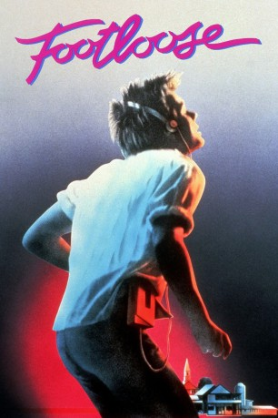

#2146 Footloose
Auszeichnungen: für 2 Oscars nominiert
 
 IMDB-Wertung: 6.5 / 10
IMDB-Wertung: 6.5 / 10  Metascore: 42
Metascore: 42 
Der musik- und tanzbegeisterte Ren zieht mit der Mutter von Chicago zu Verwandten in ein verschlafenes Provinznest. Dort ist öffentliches Tanzen per Gesetz verboten. Ren verliebt sich in Ariel, Tochter des Pfarrers, der Rockmusik als Teufelswerk geißelt. Bei einem Traktor-Duell besteht Ren eine Mutprobe und beginnt, die Jugend für die Durchführung einer öffentlichen Tanzveranstaltung zu begeistern. Der Stadtrat überstimmt den Antrag. Ren überzeugt den Pfarrer. Die große Fete findet in einer Fabrikhalle statt.
Jahr: 1984
Dauer: 107 Minuten
FSK: 12
Land: USA Studio: Paramount PicturesTonspuren:
Untertitel:
Auflösung: 1080p (1920x1080) Größe: 8284 MB
Genre: Drama, Musik, Liebe
Regisseur:  Herbert Ross
Herbert Ross
Drehbuch: Dean Pitchford
Soundtrack:
Darsteller:
 Kevin Bacon als Ren
Kevin Bacon als Ren- Lori Singer als Ariel
 John Lithgow als Rev. Shaw Moore
John Lithgow als Rev. Shaw Moore Dianne Wiest als Vi Moore
Dianne Wiest als Vi Moore Chris Penn als Willard
Chris Penn als Willard Sarah Jessica Parker als Rusty
Sarah Jessica Parker als Rusty John Laughlin als Woody
John Laughlin als Woody Frances Lee McCain als Ethel McCormack
Frances Lee McCain als Ethel McCormack- Sam Dalton als Mr. Gurntz
- John Bishop als Elvis
- Brandyn Cross als Party Kid , uncredited
 Marcia Gay Harden als Dancer , uncredited
Marcia Gay Harden als Dancer , uncredited- Elizabeth Gorcey als Wendy Jo
- Jim Youngs als Chuck Cranston
- Douglas Dirkson als Burlington Cranston
- Lynne Marta als Lulu Warnicker
- Arthur Rosenberg als Wes Warnicker
 Timothy Scott als Andy Beamis
Timothy Scott als Andy Beamis- Alan Haufrect als Coach Roger Dunbar
- Linda MacEwen als Eleanor Dunbar
- Kim Jensen als Edna
- Michael Telmont als Travis
- Leo Geter als Rich
- Ken Kemp als Jeff
- Russ McGinn als Herb
- H.E.D. Redford als Widdoes
- Jay Bernard als Harvey
- David Valenza als Team Member
- Meghan Broadhead als Sarah Warnicker
- Mimi Broadhead als Amy Warnicker
- Gene Pack als Bernie
- Marcia Reider als Virginia
- John Perryman als Fat Cowboy
- Mary Ethel Gregory als Mrs. Allyson
- Oscar Rowland als Mr. Walsh
- J. Paul Broadhead als Mayor Dooley
- Carmen Trevino als Girl
- Melissa Renee Graehl als Girl
- Monica M. Da Silva als Girl
- Terri Gay Ulmer als Girl
- Deborah Frazier als Dancer , uncredited
- Brian L. McCarty als Nerdish High School DJ , uncredited
- Alison Trouse als Cowgirl Bar Dancer , uncredited
- Brian Wimmer als (uncredited
Datei: X:\1984\Footloose (1984, FSK12, 1920x1080).mkv seit 08.10.2015
Festplatte: HD 1980-1986
 Es gibt insgesamt 46 Filme in der Gruppe '1984'
Es gibt insgesamt 46 Filme in der Gruppe '1984'